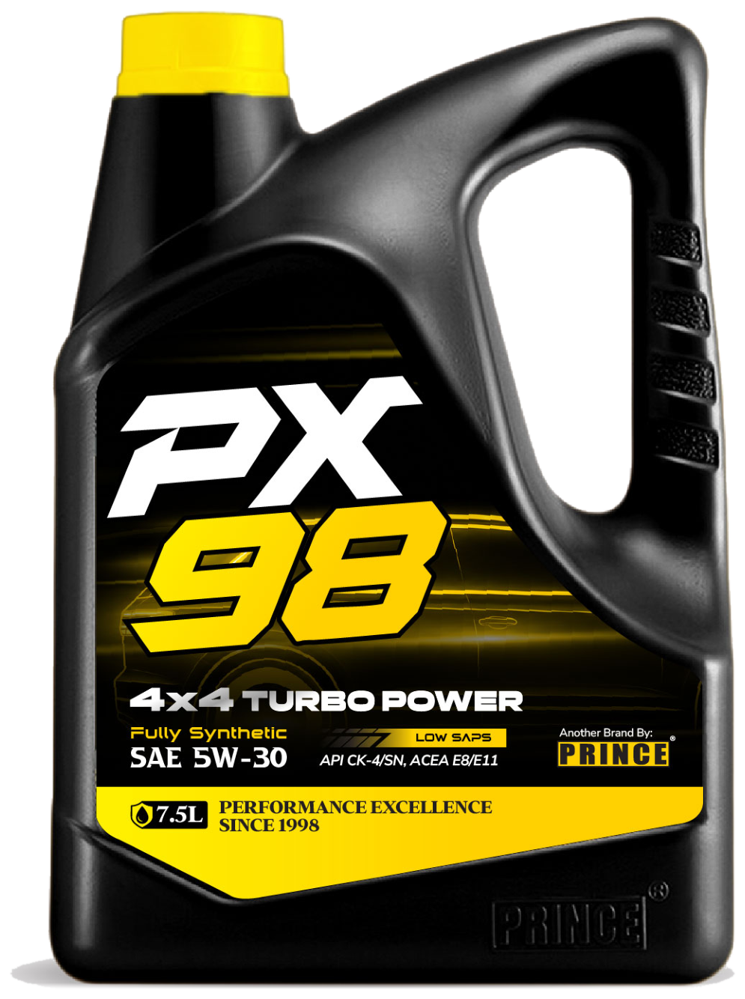

Base stock selection
Fully synthetic, VHVI synthetic, synthetic blend or premium mineral — chosen against the viscosity grade, the operating temperature range and the drain interval the fluid has to survive.
Every PX98 premium engine oil begins with carefully selected premium base stocks and highly-advanced additive systems.
Fully synthetic, VHVI synthetic, synthetic blend or premium mineral — chosen against the viscosity grade, the operating temperature range and the drain interval the fluid has to survive.
Detergents, dispersants, friction modifiers, anti-wear chemistry and VI improvers are balanced to the target approval — including reduced-SAPS packages where after-treatment systems demand it.
Each finished good undergoes rigorous quality control before release, so what leaves the plant performs the way the specification says it will.
Quicker lubrication during cold starts, stronger oil film under extreme loads, outstanding shear stability, and formidable oxidation resistance that keeps today's turbocharged engines running at peak efficiency.

Modern Euro IV to Euro VI diesels run DPF, DOC, SCR and EGR systems that conventional high-ash chemistry will foul. PX98 heavy duty oils use low and reduced-SAPS additive technology so soot handling, piston cleanliness and extended drain capability arrive without shortening after-treatment life.
See the diesel rangeSearch the range by viscosity grade, industry specification or OEM approval.